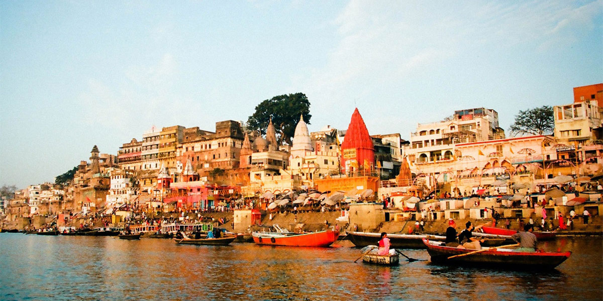

12:37 AM 11-2-16
Gwalior Fort is an 8th-century hill fort near Gwalior,Madhya Pradesh,central India.The fort consists of a defensive structure and two main palaces,Gurjari Mahal and Man Mandir,built by Man Singh Tomar.The fort has been controlled by a number of different rulers in its history. The Gurjari Mahal palace was built for Queen Mrignayani.It is now an archaeological museum.
Varanasi is a city in the Indian state of Uttar Pradesh dating to the 11th century B.C.E. Regarded as the spiritual capital of India, the city draws pilgrims who bathe in the River Ganges’ sacred waters and perform funeral rites. Along its winding streets are some 2,000 temples, including Kashi Vishwanath, the “Golden Temple,” dedicated to the Hindu god Shiva.